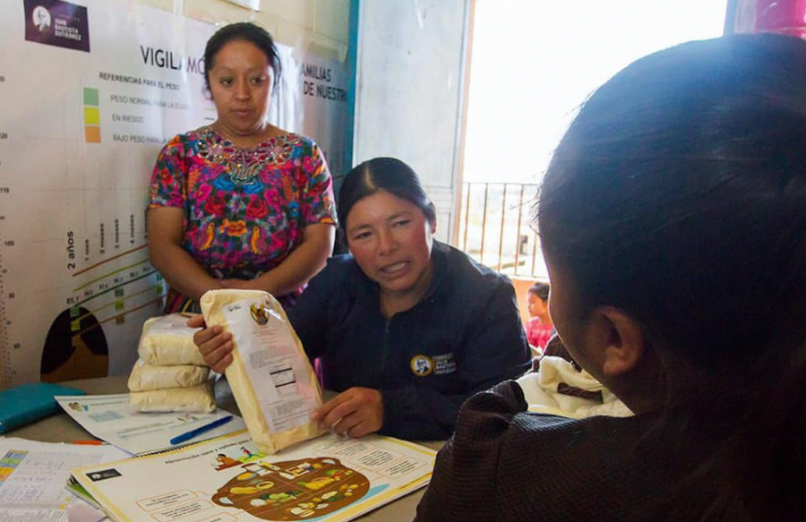

| ¿Qué se esta haciendo por lograr el ODS 2? |
|
| Actualmente la Fundación Juan Bautista Gutiérrez, con su Programa De Nutrición, realiza un gran aporte en el
proposito de ponerle fin al hambre, lograr la seguridad alimentaria, la mejora de la nutrición y promover
la agricultura sostenible. |
 |
 |
El obejtivo de este programa es generar un impacto generacional al incidir en la disminución de los índices actuales de
desnutrición crónica, siguiendo los principios de la Seguridad Alimentaria y Nutricional, a través de la transformación
y desarrollo de competencias, promoviendo la autosostenibilidad en el cambio de comportamiento de las mujeres y sus
familias; acercando alimento nutritivo a las comunidades e impulsando la generación de ingreso a través del emprendimiento. |
| ¿Qué hacen? |
|
Intruyen a las mujeres sombre como:
- Promover el empoderamiento de la mujer
- Prácticar la higiene individual, familiar y comunitario
- Realizar prácticas adecuadas de salud materno infantil
|
|
Vigilan el crecimiento de los niños participantes entre 0 a 5 años |
|
|
|
Acercan alimentos nutritivos a las comunidades, a través de la dotación de Nutribien y la
implementación de negocios Rincones y Casas del Pollo en alianza con CMI Alimentos para acercar la proteína animal. |
|
Generan ingresos, a través de la consolidación de los negocios de las emprendedoras. |
|
Fuente: https://www.fundacionjbg.org/programa-de-nutricion/ |